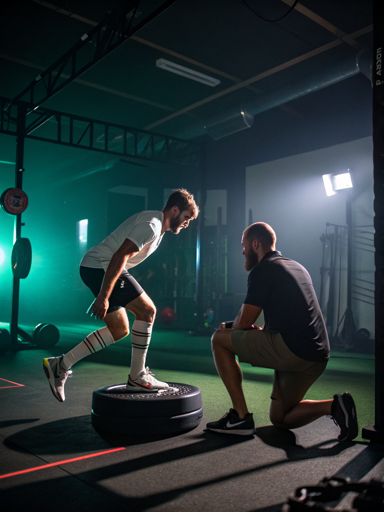
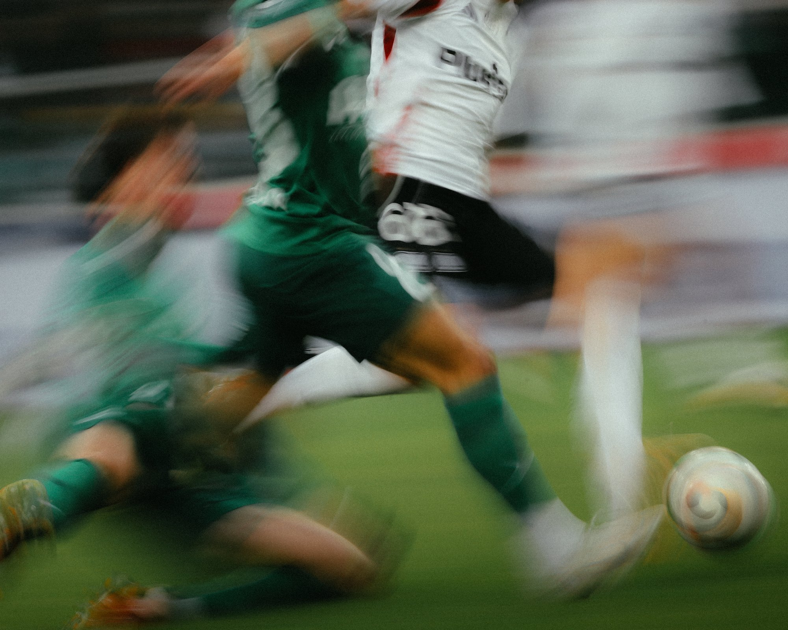

Testy motoryczne i wydolnościowe
Punkt wyjścia do planu — i miara, czy plan działa.

Motoryka, siła i profilaktyka urazów pod okiem trenerów przygotowania. Testy wydolnościowe i plan na cały sezon.
Plan układamy pod to, z czym przychodzisz. Nie musisz korzystać ze wszystkiego.
Punkt wyjścia do planu — i miara, czy plan działa.
Rozpisany na okres przygotowawczy, startowy i przejściowy.
Budowanie siły w formie, która przekłada się na Twoją dyscyplinę.
Praca nad tym, co u Ciebie realnie zawodzi — nie uniwersalny zestaw ćwiczeń.
Domknięcie rehabilitacji: od zgody fizjoterapeuty do pełnego treningu.
Uzgodnienie planu z trenerem prowadzącym, żeby obciążenia się nie dublowały.
Plan bez testu na wejściu i na wyjściu jest tylko zestawem ćwiczeń.
Trening zaczyna się od testów, bo bez nich plan jest zgadywaniem. Pomiar pokazuje, gdzie naprawdę jest luka — w sile, w wytrzymałości, w symetrii albo w kontroli ruchu — i pozwala później sprawdzić, czy przez sezon coś się zmieniło.

Piętnaście minut wystarczy, żeby ustalić, czego potrzebujesz. Bez skierowania i bez kolejki.